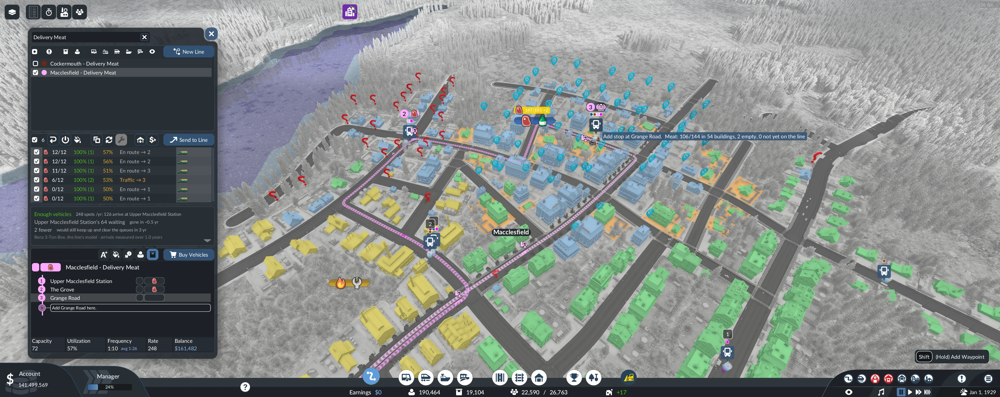
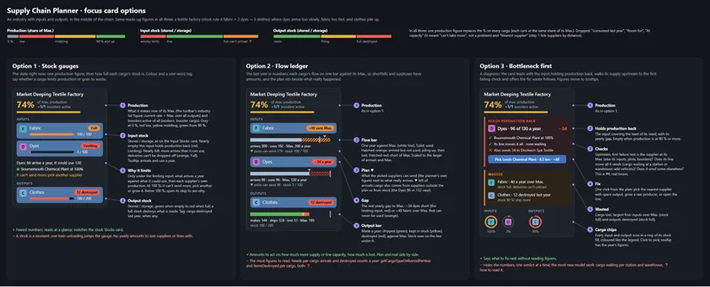
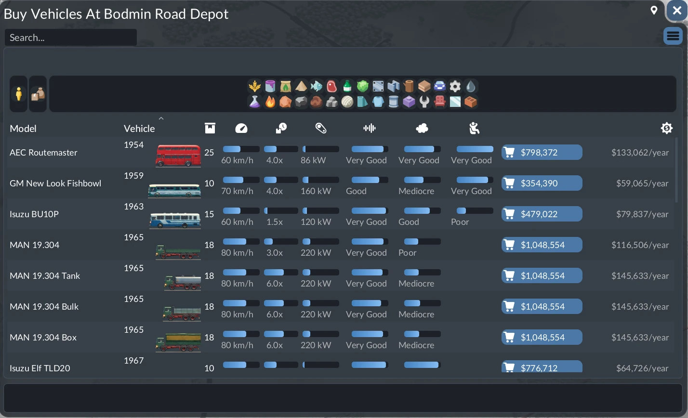
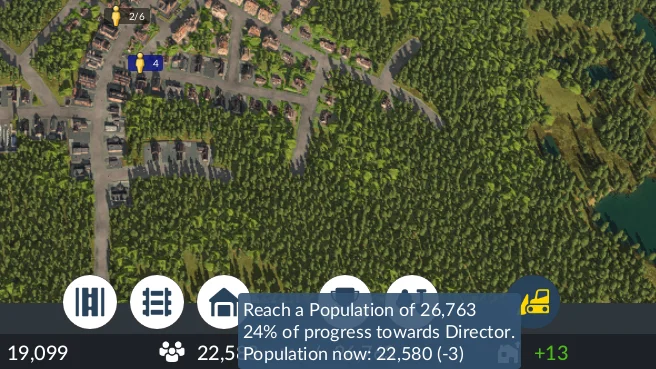
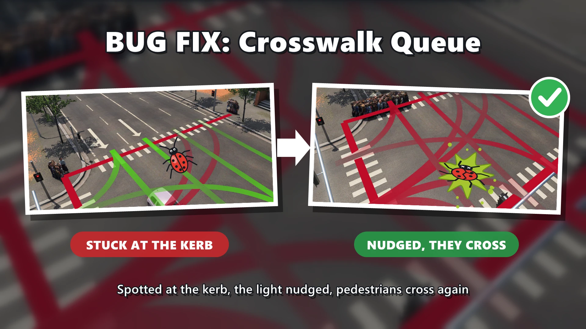
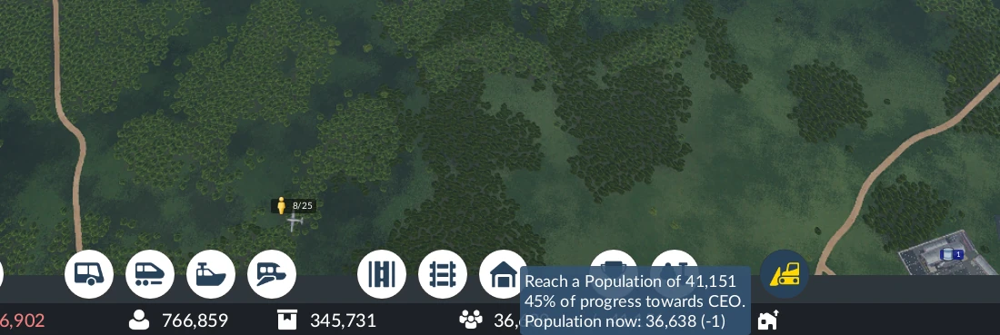

Transport Fever 3 mods
Small, focused additions to the game's own windows: clearer figures, the numbers the game keeps but never shows, and fixes for bugs found along the way.

How the mods work
Every mod follows the same rules.
Lines, cargo, industries, statistics, warehouses and more. Pick the areas you want.
Each feature has its own Off / On setting under the mod's gear when you choose a save's mods.
Features show up where the game already shows that information, in its own style.
A Logging switch, off by default, writes the mod's messages to the game log for bug reports.
The mods
Enhancements
Additions to the game's own windows and features, one switch per feature.

Line Enhancements
Terminals, deliveries, stop figures, fleet sizing, line timing and line costs.

Cargo Enhancements
Cargo flow filters for industries, towns and warehouses, and a supply chain planner.

Industry Enhancements
Correct figures for industries with two recipes, every worker, what they are doing and where they come from, plot growth, and columns for comparing industries.

Statistics Enhancements
Rank, sort and a cargo filter in every table; town, vehicle and station columns; industry totals and problem marks; red problem buttons.

Warehouse Enhancements
What each warehouse slot really holds, and which cargo fills up next.

Signal Enhancements
Repeat one-way signals at a set spacing; Shift + bulldoze removes a whole stretch.

Vehicle Enhancements
The store's table: running cost, wagon weight and length, figures against the vehicle replaced.

Subsidy Enhancements
How long an offer stays open, how long a reward runs, rings coloured by phase.

Company Enhancements
Population reached and needed for the next rank, and its change over 30 days.

To-Do List
A to-do list per save, with tasks linked to towns, industries, lines and more.
Tools
For players who run many mods: performance figures and a stutter fix.

Mod Performance Monitor
What each mod's UI and game scripts cost, their peaks and the hitches they cause.
Better Minimap Stutter Fix
Stops Better Minimap's 2-second stutter on large maps.
Bug fixes
Work-arounds for game bugs, each removable once the game is fixed.

Bug Fix - Crosswalk Queue
Pedestrians stuck at traffic lights for months: nudges the light so they cross.

Bug Fix - Helicopter Pad Freeze
Frees helicopters frozen on a one-pad helipad, with a pop-up.

Bug Watch - Stuck Passengers
Passengers left behind with seats free: a red icon lists the stops.

Bug Fix - Comfort Bar
A train's Comfort bar no longer counts the locomotive as zero comfort.
Find it in the game
Open a window, see what the mods add there.
- Distribute Delivery · Line Enhancements
A Distribute Delivery button in the Load card of a stop's window. - Toggle Passengers on All Stops · Line Enhancements
A button next to Set Line Color in the Line Manager. - Remove Cargo from All Stops · Line Enhancements
A cargo button after the passenger button in the Line Manager. - Destination - Cargo Names · Line Enhancements
Auto-Rename in the Line Manager gets a 'Destination - Cargo' suggestion, first in the list: a cargo line is named after the place it delivers to and the cargo it brings there, such as 'Colchester Steel Mill - Iron Ore' or 'Colchester Warehouse - Coal'. - District Colors in Line Manager · Line Enhancements
Town buildings keep their district colours (residential, commercial, industrial) in every view of the Line Manager, so you can see where people live, shop and work while you plan where a line should stop. - Station Catchment on Hover · Line Enhancements
Select one line in the Line Manager, or edit its stops, and point at one of its stops or at any station on the map, also while adding a stop: the town lots that station reaches turn orange. - Cargo Demand · Line Enhancements
Select one or more cargo lines in the Line Manager (lines carrying the same cargo count together), or edit a line's stops. - Descent Zones · Line Enhancements
Select one air line in the Line Manager and each airport it lands at shows a red circle where the descent starts (ten times its planes' cruise height), the straight paths planes then fly to the runway for the earliest and the latest start, and a blue strip along the runway's approach line. - Vehicle Load and Status · Line Enhancements
Each vehicle in the Line Manager's list shows its load now, its fullest departure of the last 20 with the stop's number, its average fill when leaving a stop, and what it is doing and where, with how long: 'Loading (4)', 'En route → 4', circling an airport, waiting to take off, at a signal or for a full terminal, in traffic, spacing out. - Stop Figures · Line Enhancements
A toggle at the end of the Line Manager's action bar (cargo and clock icon) turns the selected line's stop list into a Figures view: one row per stop and cargo with what waits there for this line, the vehicle loads that makes, the change since the last vehicle left, the unhappy passengers and the arrivals a year. - Vehicles Needed · Line Enhancements
A card under the Line Manager's vehicle list measures how much arrives at each stop a year and compares it with the seats the line offers: '+3 to keep up', '+5 to clear the queues' (empty today's queues within 3 years), 'Enough vehicles', or how many fewer would still keep up. - Line Timing · Line Enhancements
A Timing card in the line window, after Vehicles: the normal loop (one vehicle round all stops on its best trips), the loop now (green, yellow or red against normal) and the frequency with its normal, then what slows the line, worst first, with what it costs in vehicles, such as 'Circling on the way to Hartha Airport: 1:31 a loop = 0.33 aircraft'. - Selected Vehicle Count · Line Enhancements
The Line Manager's vehicle list shows how many of its vehicles are selected, as a number between the select-all box and the Reverse button; the tooltip adds how many are listed. - Send to Line Remembers Filter · Line Enhancements
The Send to Line popover, from the vehicle window or the Line Manager, opens with Show Only Visible Lines the way you last left it, for the rest of the session.
- Cargo Demand · Line Enhancements
Select one or more cargo lines in the Line Manager (lines carrying the same cargo count together), or edit a line's stops. - Vehicle Load and Status · Line Enhancements
Each vehicle in the Line Manager's list shows its load now, its fullest departure of the last 20 with the stop's number, its average fill when leaving a stop, and what it is doing and where, with how long: 'Loading (4)', 'En route → 4', circling an airport, waiting to take off, at a signal or for a full terminal, in traffic, spacing out. - Line Timing · Line Enhancements
A Timing card in the line window, after Vehicles: the normal loop (one vehicle round all stops on its best trips), the loop now (green, yellow or red against normal) and the frequency with its normal, then what slows the line, worst first, with what it costs in vehicles, such as 'Circling on the way to Hartha Airport: 1:31 a loop = 0.33 aircraft'. - Line Cost Cards · Line Enhancements
Two cards in the line window. - Manage Line Buttons · Line Enhancements
A Line Manager icon right of a line's name opens the Line Manager on that line. - To-Do in Windows · To-Do List
Tasks can link to towns, industries, stations, lines and warehouses.
- Assign Lines · Line Enhancements
An Assign Lines button next to Configure in the station window opens a window with the station's terminals and the lines that stop there. - Manage Line Buttons · Line Enhancements
A Line Manager icon right of a line's name opens the Line Manager on that line. - To-Do in Windows · To-Do List
Tasks can link to towns, industries, stations, lines and warehouses.

- 1Industry EnhancementsProduction: each recipe its own figures; plots and the next growth try.
- 2To-Do ListTo-Do card: open tasks about this industry, + for a new one.
- 3Industry EnhancementsBoosters: every worker counted, not only those who came by line.
- 4Industry EnhancementsWorker list: what each worker is doing now.
- 5Cargo EnhancementsInput / Output Stocks, expanded: cargo filter, distance column and slider.
- 6Cargo EnhancementsSupply Chains: opens the supply chain planner.
- Cargo Filter · Cargo Enhancements
Cargo buttons above the table of an expanded Input Stocks or Output Stocks card: All, as in the game, and one button per cargo. - Distance Slider · Cargo Enhancements
A slider in the filter row hides suppliers and consumers farther away than the distance it shows, both their arrows and their table rows. - Producing Filter · Cargo Enhancements
A Producing toggle (the factory icon) in the filter row. - Distance Column · Cargo Enhancements
A Distance column in the supplier and consumer tables of the industry, town and warehouse windows: the straight-line distance to the other industry or town. - Supplier Table Sort · Cargo Enhancements
In the supplier and consumer tables, the first click on a header sorts amounts largest first, names A to Z and distances nearest first; a second click flips it. - Supply Chain Planner · Cargo Enhancements
A Supply Chains card in the town and industry windows. - Recipe Figures · Industry Enhancements
Every recipe row of the Production card shows its own cargos' figures. - Plot Growth · Industry Enhancements
Under a raw producer's plots, the Production card shows the plots built of the most it may have (15/20) and when the game next tries to add one (43 days): green when it will succeed, yellow when it may, grey when it can't. - Worker Status · Industry Enhancements
The Boosters card's count adds the other workers in brackets: 11 (8)/10 means 11 came by line, 8 more work there, and 10 are needed for the boost. - Worker Sources · Industry Enhancements
Expanding an industry's Boosters card draws arrows from the towns its workers can come from: the 5 closest towns, the ones a worker subsidy shows, and any town that sends workers now. - To-Do in Windows · To-Do List
Tasks can link to towns, industries, stations, lines and warehouses.
- Town Supply Filter · Cargo Enhancements
The Suppliers view gets the filter row: pick a cargo the town needs to see only where it can come from, on the map and in the table. - Distance Slider · Cargo Enhancements
A slider in the filter row hides suppliers and consumers farther away than the distance it shows, both their arrows and their table rows. - Producing Filter · Cargo Enhancements
A Producing toggle (the factory icon) in the filter row. - Distance Column · Cargo Enhancements
A Distance column in the supplier and consumer tables of the industry, town and warehouse windows: the straight-line distance to the other industry or town. - Supplier Table Sort · Cargo Enhancements
In the supplier and consumer tables, the first click on a header sorts amounts largest first, names A to Z and distances nearest first; a second click flips it. - Supply Chain Planner · Cargo Enhancements
A Supply Chains card in the town and industry windows. - To-Do in Windows · To-Do List
Tasks can link to towns, industries, stations, lines and warehouses.
- Distance Slider · Cargo Enhancements
A slider in the filter row hides suppliers and consumers farther away than the distance it shows, both their arrows and their table rows. - Producing Filter · Cargo Enhancements
A Producing toggle (the factory icon) in the filter row. - Distance Column · Cargo Enhancements
A Distance column in the supplier and consumer tables of the industry, town and warehouse windows: the straight-line distance to the other industry or town. - Supplier Table Sort · Cargo Enhancements
In the supplier and consumer tables, the first click on a header sorts amounts largest first, names A to Z and distances nearest first; a second click flips it. - Warehouse Consumers and Suppliers · Cargo Enhancements
A Consumers and Suppliers card in the warehouse window. - Warehouse Stocks Card · Warehouse Enhancements
For each cargo, the card shows its room, its change over the last year, the time until full, and whether a line unloads it there. - To-Do in Windows · To-Do List
Tasks can link to towns, industries, stations, lines and warehouses.
- Manage Line Buttons · Line Enhancements
A Line Manager icon right of a line's name opens the Line Manager on that line. - Send to Line Remembers Filter · Line Enhancements
The Send to Line popover, from the vehicle window or the Line Manager, opens with Show Only Visible Lines the way you last left it, for the rest of the session. - Fix Comfort Bar · Bug Fix - Comfort Bar
The Comfort bar counts only the parts with seats, each after its own wear, so the locomotive no longer drags it down.
- Running Cost Column · Vehicle Enhancements
A column right after the buy button shows each vehicle's running cost a year, the same figure the list layout shows under the price. - Replace Comparison · Vehicle Enhancements
In a Replace store's table, each figure (capacity, speed, loading speed, power, noise, pollution, comfort and the running cost) is green where the vehicle is better than the one replaced and red where it is worse. - Wagon Weight and Length · Vehicle Enhancements
On the Wagon tab (trains and trams), each wagon's weight and length come right after its capacity, and the empty Power column goes.
- Assign Lines · Line Enhancements
An Assign Lines button next to Configure in the station window opens a window with the station's terminals and the lines that stop there. - Statistics - Cost Views · Line Enhancements
Three view buttons in the Lines tab, before the vehicle-type buttons. - Manage Line Buttons · Line Enhancements
A Line Manager icon right of a line's name opens the Line Manager on that line. - Worker Status · Industry Enhancements
The Boosters card's count adds the other workers in brackets: 11 (8)/10 means 11 came by line, 8 more work there, and 10 are needed for the boost. - Statistics - Column Enhancements · Industry Enhancements
The Industries tab gets the columns Name, Problems, Plots, Recipe In, Recipe Out, Workload, Input, Output, Shipment, Boosters and Workplaces. - Rank Column · Statistics Enhancements
Every statistics table starts with a Rank column: each row's place in the current order, so you can see where a town or line stands and count rows at a glance. - Sort Largest First · Statistics Enhancements
The first click on a column header sorts largest first: most population, most cargo, highest balance. - Scroll to Top on Sort · Statistics Enhancements
Whenever you sort a table, it jumps back to its first row. - Cargo Filter in the Towns tab · Statistics Enhancements
The Towns tab gets a cargo list next to the eye. - Cargo Filter in the Industries tab · Statistics Enhancements
The Industries tab gets a cargo list next to the eye. - Cargo Demand and Supply · Statistics Enhancements
The four columns become two. - Public Transport Coverage · Statistics Enhancements
The Public Transport figure keeps the game's number but is coloured by the town's public transport coverage, the passenger row of the town window's Supplies tab: green from 67 %, yellow from 33 %, red below, as the town window colours it. - Vehicle - Column Enhancements · Statistics Enhancements
Line comes before Vehicle and gets more room, so line names are easier to read. Before Balance come Income and Running Costs from the vehicle window's Balance card, over the same last 12 months, so Income minus Running Costs is the Balance. - Station - Column Enhancements · Statistics Enhancements
The Stations tab shows each station terminal by terminal. - Industry - Recipe Totals · Statistics Enhancements
For industries with more than one recipe, the statistics Industries tab counts each cargo once in Input and Output, and Workload compares against the largest recipe. - Industry - Problem Marks · Statistics Enhancements
The statistics Industries tab's Problems column marks industries blocked from further expansion and industries destroying cargo they ship too slowly (some shipped, yet some destroyed in a full stock; a cargo nobody picks up doesn't count); click a mark to open the industry. - Problem Buttons · Statistics Enhancements
The statistics buttons in the game bar turn red while their table has something to look at, so you see at a glance where to check. - Statistics - Slot Columns · Warehouse Enhancements
Each warehouse's slots show as a strip of tiles, grouped by kind.
- Offer Countdown · Subsidy Enhancements
An offer you haven't accepted shows its time left as a bar, drawn like the countdown the game shows once a subsidy is accepted: in the Subsidy Available notification and in the subsidy's window, under Decline and Accept. - Reward Countdown · Subsidy Enhancements
A fulfilled subsidy shows a bar with its reward's time left, in its notification and in its window, under the game's completed mark.

- 1Company EnhancementsPopulation Counter: the population your company has reached against the next rank's; the tooltip adds the progress and today's population.
- 2Company EnhancementsPopulation Change: how much the world's population grew over 30 days, updated weekly.
- Problem Buttons · Statistics Enhancements
The statistics buttons in the game bar turn red while their table has something to look at, so you see at a glance where to check. - Population Counter · Company Enhancements
A third counter beside Transported Passengers and Cargo at the bottom of the screen: the population your company has reached and the population its next rank needs, for example 48,210 / 52,000. - Population Change · Company Enhancements
A counter beside the Population Counter, with a house and arrow icon: how much the population of all towns changed over the 30 days before the start of the week, green when it grew (+1,234) and red when it shrank (-1,293).
- 1To-Do ListTo-Do List: your notes for this save.
- 2Mod Performance MonitorMod Performance: what each mod costs per frame.
- 3Cargo EnhancementsSupply Chain Planner, on the town or industry it last showed.
- 4Bug Watch - Stuck PassengersStuck Passengers: turns red when passengers are left behind at a stop.
- Supply Chain Planner · Cargo Enhancements
A Supply Chains card in the town and industry windows. - To-Do List · To-Do List
A checklist button beside Data Layers at the top left opens the save's to-do list, with a To Do and a Done tab. - Monitor · Mod Performance Monitor
A stopwatch button beside Data Layers opens the Mod Performance window. - Game Script Timing · Mod Performance Monitor
With Monitor on, also times every mod's game scripts, the part of a mod that runs in the simulation. - Stuck Passenger Alert · Bug Watch - Stuck Passengers
A red icon lists the line stops where vehicles leave passengers behind with seats free.
- District Colors in Line Manager · Line Enhancements
Town buildings keep their district colours (residential, commercial, industrial) in every view of the Line Manager, so you can see where people live, shop and work while you plan where a line should stop. - Station Catchment on Hover · Line Enhancements
Select one line in the Line Manager, or edit its stops, and point at one of its stops or at any station on the map, also while adding a stop: the town lots that station reaches turn orange. - Cargo Demand · Line Enhancements
Select one or more cargo lines in the Line Manager (lines carrying the same cargo count together), or edit a line's stops. - Descent Zones · Line Enhancements
Select one air line in the Line Manager and each airport it lands at shows a red circle where the descent starts (ten times its planes' cruise height), the straight paths planes then fly to the runway for the earliest and the latest start, and a blue strip along the runway's approach line.
- Signal Spacing · Signal Enhancements
A Spacing option in the path signal tool, shown when One-Way is set to Yes: Off, 80, 120, 160, 240 or 320 m. - Shift + Bulldoze Signal Stretch · Signal Enhancements
Bulldozing a signal with Shift held also removes every other path signal on its stretch of track, out to the next switch, crossing, dead end or station. - Refresh After Building · Better Minimap Stutter Fix
Better Minimap checks the map once you stop building or bulldozing for a moment, so it shows your own changes.
- Offer Countdown · Subsidy Enhancements
An offer you haven't accepted shows its time left as a bar, drawn like the countdown the game shows once a subsidy is accepted: in the Subsidy Available notification and in the subsidy's window, under Decline and Accept. - Reward Countdown · Subsidy Enhancements
A fulfilled subsidy shows a bar with its reward's time left, in its notification and in its window, under the game's completed mark. - Subsidy Ring Colors · Subsidy Enhancements
The ring around an accepted subsidy's icon is yellow while the subsidy is in progress and green while its reward runs. - Free Frozen Helicopters · Bug Fix - Helicopter Pad Freeze
The mod spots a frozen helicopter within seconds and does what the Reverse ("previous station") button does by hand: it reverses the helicopter off the pad and, once it is clear, reverses it again until it heads back for the same stop.
- Hitch Log · Mod Performance Monitor
Writes each hitch to the game log with the mods that took the most of it. - Map Check Interval · Better Minimap Stutter Fix
Makes that check run every 30 seconds instead: 10, 30 or 60 seconds, or Better Minimap's own 2 seconds, in the mod's Settings. - Unstick Crosswalks · Bug Fix - Crosswalk Queue
Finds crossings where pedestrians are stuck and nudges the light so they cross. - Free Frozen Helicopters · Bug Fix - Helicopter Pad Freeze
The mod spots a frozen helicopter within seconds and does what the Reverse ("previous station") button does by hand: it reverses the helicopter off the pad and, once it is clear, reverses it again until it heads back for the same stop.
Research
Pedestrians who never cross
At signalised crossings in every town of a test map, the walk phase stopped coming on while crowds waited, some for months. Reported with figures from a watch tool, and worked around.
Passengers who never board
Passengers who queue at an overcrowded stop are never picked up afterwards: buses of their line leave with seats free while they keep waiting.
Helicopters frozen on the pad
Traced landing by landing: a helicopter that hovers low while waiting for a one-pad helipad sinks onto the deck and never arrives, blocking the pad for every other helicopter.
Planes that skip waypoints
Where a plane's descent replaces its planned route with a straight-in approach, dropping the waypoints still ahead, and where a last waypoint survives.